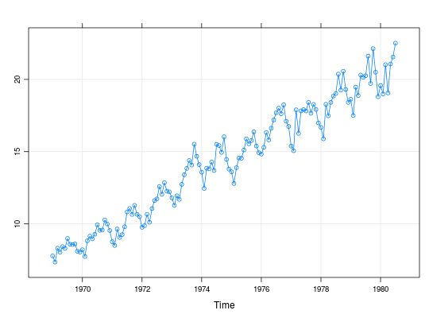

Dados sobre a variação mensal do índice de produto industrial (IPI) do Brasil no período de 1969 a 1980.
Uma série temporal (classe ts) com 139 observações
mensais, de 1969 a 1980.
Morettin, P. A., Toloi, C. M. C. (2006). Análise de Séries Temporais (2nd ed.). São Paulo, SP: Editora Egard Blucher. (Tabela 3.6, pág. 68)
data(MorettinTb3.6) str(MorettinTb3.6)#> Time-Series [1:139] from 1969 to 1980: 7.78 7.35 8.32 8.04 8.42 ...MorettinTb3.6#> Jan Feb Mar Apr May Jun Jul Aug Sep Oct #> 1969 7.780 7.351 8.317 8.036 8.424 8.300 8.985 8.589 8.564 8.614 #> 1970 8.209 7.738 8.828 9.150 8.960 9.282 9.934 9.549 9.572 10.272 #> 1971 8.761 8.501 9.642 9.058 9.256 9.799 10.828 11.063 10.652 11.278 #> 1972 9.759 9.876 10.664 10.110 11.055 11.615 11.730 12.587 12.046 12.852 #> 1973 11.798 11.278 11.945 11.695 12.734 13.405 13.836 14.388 14.069 15.519 #> 1974 13.577 12.451 13.856 13.812 14.280 13.692 15.502 15.423 14.947 16.031 #> 1975 13.608 12.794 13.889 14.555 14.545 15.114 15.886 15.541 15.770 16.375 #> 1976 14.829 15.297 16.330 15.807 16.623 17.196 17.691 18.012 17.625 18.244 #> 1977 15.385 15.062 17.896 16.262 17.820 17.911 17.818 18.410 17.658 18.273 #> 1978 16.681 15.886 18.281 17.478 18.412 18.849 19.023 20.372 19.262 20.570 #> 1979 18.633 17.497 19.470 18.884 20.308 20.146 20.258 21.614 19.717 22.133 #> 1980 19.577 18.992 21.022 19.064 21.067 21.553 22.513 #> Nov Dec #> 1969 8.102 8.044 #> 1970 9.991 9.537 #> 1971 10.661 10.500 #> 1972 12.259 12.214 #> 1973 14.680 14.104 #> 1974 14.462 13.791 #> 1975 15.386 14.927 #> 1976 17.102 16.744 #> 1977 17.922 16.987 #> 1978 19.304 18.407 #> 1979 20.503 18.800 #> 1980summary(MorettinTb3.6)#> Min. 1st Qu. Median Mean 3rd Qu. Max. #> 7.351 10.660 14.540 14.310 17.820 22.510library(lattice) xyplot(MorettinTb3.6, type = c("o", "g"))